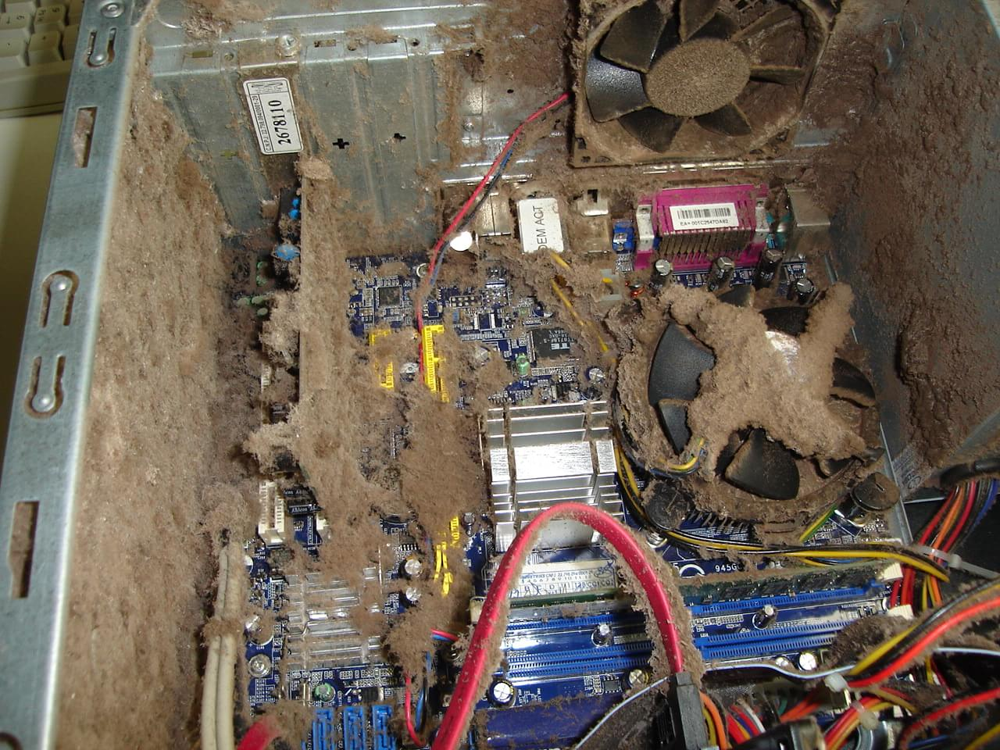

Apesar de CPUs e GPUs serem parte do nosso dia-a-dia,
estando presentes quer seja nos nossos telemóveis, computadores e
entre muitos outros, a sua história e evolução não é tão conhecida
como parece. Assim, neste projeto iremos falar sobre a história e
evolução da performance do hardware de computadores, mais especificamente,
dos GPUs e CPUs e de seguida iremos falar sobre a degradação deste
mesmo hardware ao longo do tempo. Estes temas foram escolhidos devido ao
interesse em como funciona o hardware dos computadores e uma oportunidade
para aprender sobre a sua história e evolução.
Aqui podes encontrar mais informação sobre a degradação deste material e como a mesma afeta o seu desempenho.
